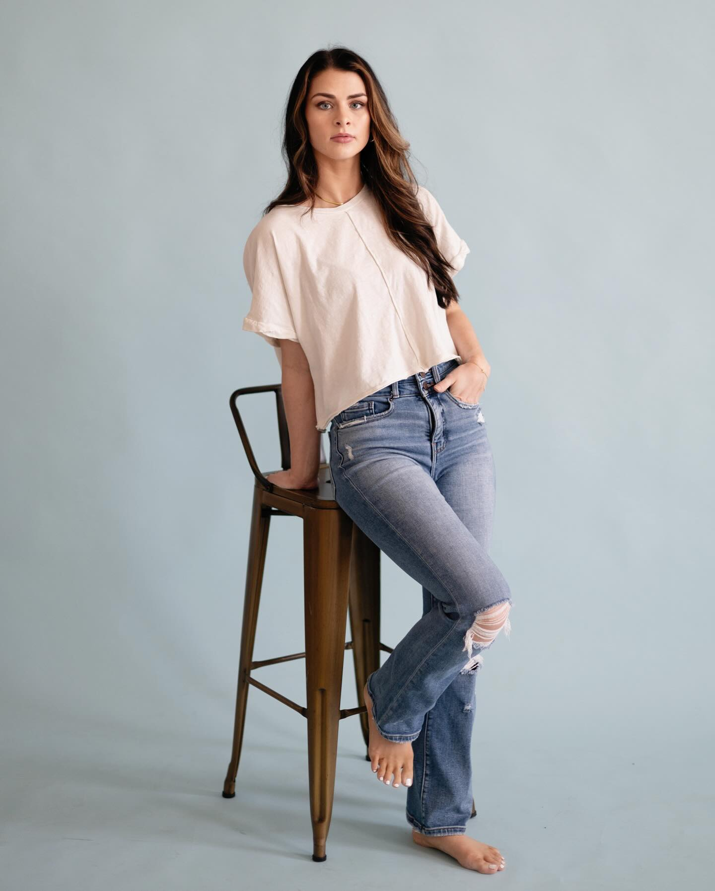

Meet Emily.
Wife, mom, and senior photographer based in Gretna, Virginia.
Wife. Mom. Photographer.
Hi there! I'm Emily — wife to Jeff, mom to Ava, Owen, and Elijah, and the photographer behind every EKP session. God has blessed our family in ways I can't begin to count, and life with three little ones is never, ever boring.
I grew up with a camera in my hands. I had no idea what I was doing in the beginning, but I loved directing my sisters and cousins in "photo shoots" from the time I was old enough to hold a viewfinder. It wasn't until college — when friends and family started asking me to take their photos — that I realized photography was more than a hobby. It was what I was meant to do.
Nothing makes me happier than to take an absolutely stunning image of a senior, then to turn the camera around and show her just how beautiful she is.
Instilling that sense of beauty and self-confidence is what my business is all about. Senior year is such a big deal. You've worked so hard, and now it's your time. More than likely, the next time you'll be photographed will be your wedding day — so all the more reason to make your senior portrait experience amazing.
Take a look around. Read the testimonials, page through the portfolio, and when you're ready, fill out the Contact form to receive my Senior Magazine — it's packed with information about my shoots, pricing, and what to expect. I'd love to be a part of your senior year.



A peek behind the scenes
Strong coffee, slow mornings, and a good book on the porch.
Family farm life with three little ones and far too many barn cats.
Golden hour light, soft fabrics, old gates, and crunchy fall leaves.
Helping a senior see herself the way the rest of us already do.
Let's work together.
I'd love to be a part of your senior year. Send a note and I'll reply with the Senior Magazine — full of session details, pricing, and sample images.
Contact Me